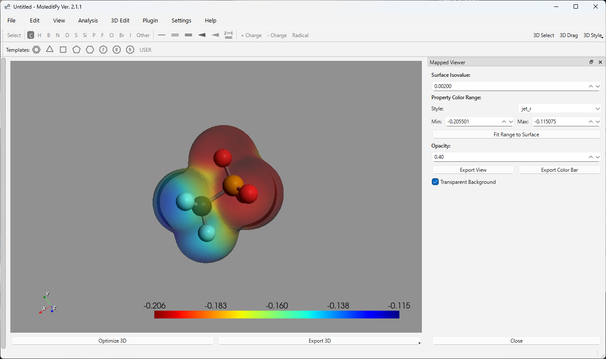
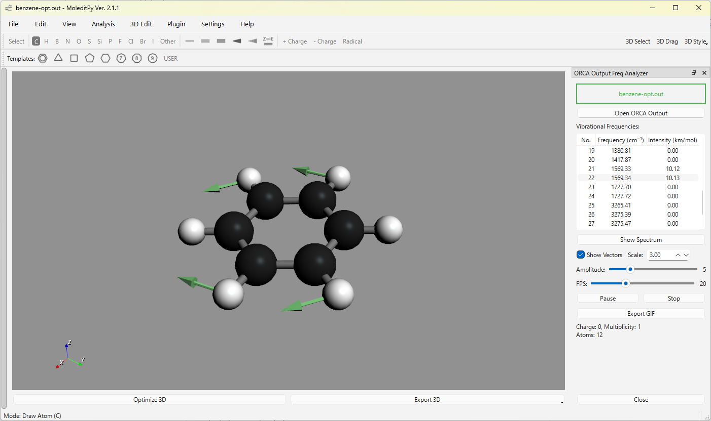
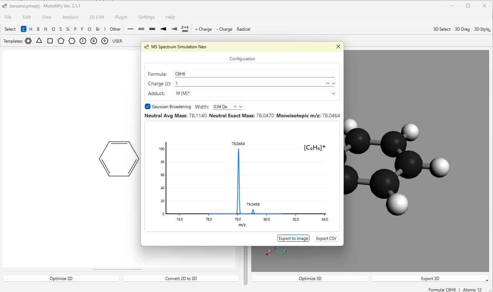
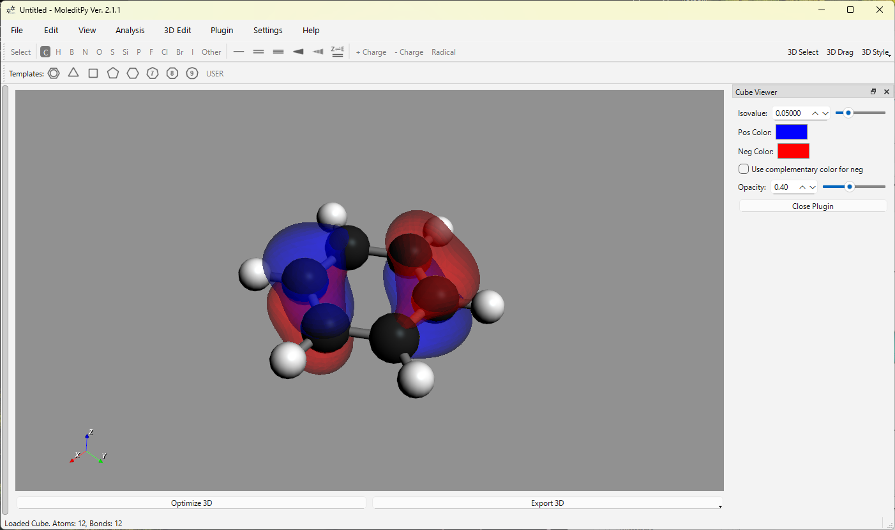

Get the Plugin InstallerPlugin Installerを入手
Download it from the Plugin Explorer, open Plugin › Plugin Manager… in MoleditPy, and drag the file into the window.からダウンロードし、MoleditPyの Plugin › Plugin Manager… を開いてファイルをドラッグ＆ドロップします。
 MoleditPy Plugins v4
MoleditPy Plugins v4
The official plugin collectionMoleditPy 公式プラグインコレクション
Input generators for ten quantum-chemistry codes, result and cube-file analyzers, rendering exports, and AI integrations — installed from inside MoleditPy, with every download checked against its SHA-256.10種類の量子化学計算コードに対応した入力ファイル生成、計算結果やCubeファイルの解析、レンダリング出力、AI連携まで。MoleditPyの中から直接インストールでき、ダウンロードはすべてSHA-256で検証されます。

01 / Plugins at workプラグインの使用例

Analysis · DFT ORCA Freq Analyzer Read an ORCA output, animate normal modes with vectors, plot the IR spectrum, and export a GIF.ORCAの出力を読み込み、基準振動をベクトル付きでアニメーション表示。IRスペクトル表示とGIF出力に対応。
Analysis MS Spectrum Simulation Neo Simulate the isotope pattern of the molecular ion or an adduct such as [M+H]+, with Gaussian broadening.分子イオンや [M+H]+ などの付加イオンの同位体パターンを、ガウス広がり付きでシミュレート。
File · Visualization Cube File Viewer Open Gaussian cube files and render orbitals or densities as isosurfaces with adjustable isovalue and opacity.Gaussian Cubeファイルを開き、軌道や電子密度を等値面として表示。等値面の値と不透明度を調整可能。02 / Highlighted plugins注目のプラグイン
Each card opens the plugin in the Explorer, where you can read its details, requirements, and supported platforms.各カードからExplorerでプラグインの詳細、依存関係、対応OSを確認できます。
03 / Installインストール
Requires MoleditPy 4. New to MoleditPy? Start with the MoleditPy 4が必要です。初めての方はinstallation guideインストール手順.をご覧ください。
Download it from the Plugin Explorer, open Plugin › Plugin Manager… in MoleditPy, and drag the file into the window.からダウンロードし、MoleditPyの Plugin › Plugin Manager… を開いてファイルをドラッグ＆ドロップします。
Open Plugin › Plugin Installer… to browse the registry and install with one click. Each download is checked against the SHA-256 recorded in the registry.Plugin › Plugin Installer… からレジストリを閲覧し、ワンクリックでインストール。ダウンロードはレジストリ記載のSHA-256と照合されます。
The Plugin Installer checks your installed plugins for updates. Plugins can also be installed manually into ~/.moleditpy/plugins.Plugin Installerがインストール済みプラグインの更新を確認します。~/.moleditpy/plugins への手動インストールも可能です。
04 / Build your ownプラグインを作る
Define initialize(context), register a menu action, and work with the current RDKit molecule. Start from the template repository, then submit your plugin to the registry so others can install it.initialize(context) を定義してメニューを登録すれば、現在のRDKit分子を扱えます。テンプレートから始めて、レジストリに登録すれば誰でもインストールできるようになります。
PLUGIN_NAME = "Atom Count"
PLUGIN_VERSION = "2026.10.06"
def initialize(context):
def show_count():
mol = context.current_mol
if mol is not None:
context.show_status_message(
f"{mol.GetNumAtoms()} atoms"
)
context.add_menu_action(
"Analysis/Atom Count", show_count
)